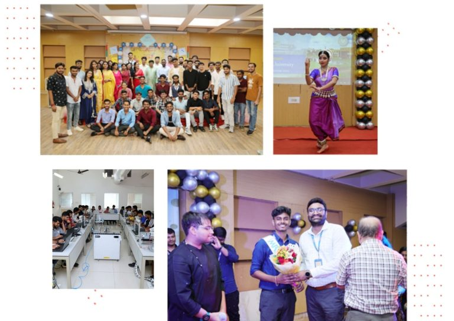

|
|
C V Raman Global UniversityBhubaneswar, Odisha |
|
Established in accordance with the Odisha Act 01 of 2020, C. V. Raman Global University, Odisha (CGU, Odisha) introduces students to new and innovative ways of learning.
It is a vibrant community of students, faculty and staff members committed to making a difference in society by leading with innovation and purpose.
We take pride in our ethos and collaborative culture that foster intellectual engagement and growth. At CGU, Odisha, students learn to challenge the status quo and solve the most difficult problems with analytical rigour and creativity. We continue to add interdisciplinary courses to our existing portfolio to offer a truly global education in the field of science and technology. |
 |

|
CGU, Odisha rests on the legacy and leadership of C.V. Raman College of Engineering (CVRCE) which began its transformative journey in 1997.
It grew in record time imparting technical education with a larger purpose and impact through world-class laboratories, research-intensive learning pedagogy, unmatched Centres of Excellence and unhindered connectivity to some of the finest libraries in the world.
CGU, Odisha imbibes the same institutional values of CVRCE and aims to offer a dynamic learning environment to students through its responsive support system, robust infrastructure and global exposure (enabled via international seminars, conferences and workshops). Committed to offering quality education to all, it aims to push the frontiers of knowledge with cutting-edge research, innovation and unconventional thinking. |